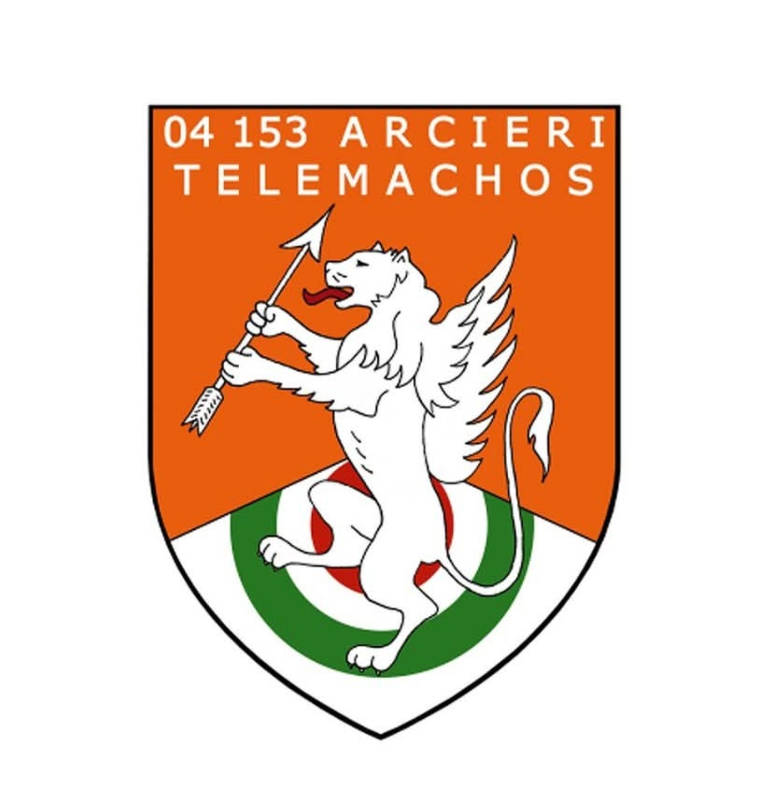

Bosco3D Lite
Segnapunti per percorsi 3D
🏹
Nuovo allenamento
Inizia un nuovo percorso
▶
Riprendi allenamento
Continua quello in corso
📋 Storico allenamenti
Visualizza i risultati salvati
Bersaglio
1 / 24
Freccia
1 / 2
Totale
0
Segna punteggio
11
10
8
5
M
↩ Annulla ultimo colpo
✕ Annulla allenamento
Allenamento terminato
0
💾 Salva risultato
🏹 Nuovo allenamento
🏠 Home
Storico allenamenti
🗑 Cancella storico
🏠 Home